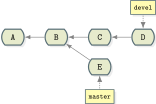
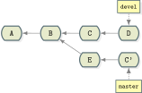

Git Training
Authors
The Problem
- Codebase is undergoing frequent changes. It is easy for something to go wrong.
- How do you review the codebase history?
- How do you handle changes done by different people working on the same files?
- How do you make sure every server and developer has the same version across?
Possible Solutions
- Copy and paste? ✖
- FTP server? ✖
- Version control system? ✔
Version Control Systems
- Allows you to keep a history of every change within a project.
- Allows multiple people to collaborate on the same project, without evil stuff happening.
- Allows multiple people to make sure that when they are working with a specific version they have the same code all around.
Different Systems of Version Control
- Local version control systems
- Centralized version control systems
- Distributed version control systems
Local Version Control Systems
Simple database that keeps all changes to files under version control.
Example system: RCS
RCS keeps patch sets and recreates what any file looked like at any point in time by adding up all the patches.

Centralized Version Control Systems
- Allows collaboration between different people.
- A single server that contains all the versioned files.
- A number of clients that check out files from that central place.
- Main disadvantage is that CVCS have a single point of failure.
- Example systems:
SVN,CVS.

Distributed Version Control Systems
Users fully mirror repository.
A failed server can be restored from any client's mirror.
Example systems: git, mercurial.

Installing git
To install git on Linux:
apt-get install git
yum install git
pacman -S git
To install git on Mac:
brew install git
http://git-scm.com/download
To install git on Windows:
http://git-scm.com/download
git First-Time Configuration
To setup user name:
$ git config --global user.name "Absi Gittawi"
To setup email:
$ git config --global user.email absi.gittawi@jordanopensource.org
To list all configurations:
$ git config --list
Starting with git
Repository: in simple words, a project's folder. A repository contains all of the project files, each file's revision history, user configuration, and git data.
To initialize a repo (short for repository) in an existing folder:
$ git init
To initialize a repo in a new folder:
$ git init <project-folder>
The Three States

Files Life Cycle

Files Status
$ git status
On branch master
nothing to commit, working directory clean
- Clean working directory (no tracked and modified files)
- The branch you’re on
- If you diverged from the same branch on the server
git add
To add a single file:
$ git add <file-name>
To add all files in current folder and subfolders:
$ git add .
To add hunks (tracked files only):
$ git add -p
git reset
To reset a single file:
$ git reset <file-name>
To reset all changes files in current folder and subfolders:
$ git reset .
To reset hunks:
$ git reset -p
git diff
To see what changed but not has not yet staged:
$ git diff
To see what is staged so far:
$ git diff --cached
$ git diff --staged
Committing Changes
To commit:
$ git commit
This launches a text editor (can be set using core.editor config).
To commit and enter commit message on command-line:
$ git commit -m "<commit-message>"
To skip staging area, add and commit every tracked file:
$ git commit -am "<commit-message>"
Browsing History
$ git log
commit <commit-sha1>
author: Absi Gittawi <absi.gittawi@jordanopensource.org>
date: fri feb 13 20:19:08 2015 +0300
<commit-message>
$ git log -p
Working with branches
Branches in git:
- Incredibly lightweight
- References to a specific commit -- nothing more
Creating a new branch:
$ git branch <branch-name>
Switching branches:
$ git checkout <branch-name>
Merging branches
Merging branches in git:
- Combines work from two different branches
- Creates a special commit that has two unique parents
Switch to destination branch:
$ git checkout <destination-branch-name>
Merge the commits from the other branch:
$ git merge <branch-name>
Merge Conflicts
Occasionally conflicts happen:
- Same part of the same file changed differently in the two branches you’re merging
- Git won’t be able to merge the branches cleanly
- You will have to resolve the conflict manually
$ git merge <bug-fix>
Auto-merging index.html
CONFLICT (content): Merge conflict in index.html
Automatic merge failed; fix conflicts and then commit the result.
Merge Conflicts (Cont.)
<<<<<<< HEAD:index.html ======= >>>>>>> iss53:index.html
Working with others
- Web-based Git repository hosting services
- Remote branches
- Cloning
- Hosting Git on your server
Cloud Git hosting
- Allow you to store your code in a safe place
- Allow other developers to join you
- They provide other related tools like permissions control, Wikis and issues tracking
- eg: GitHub, Bitbucket
Step 1: Creating a new repository
Step 2: Adding a remote repository
Remote repositories are versions of your project that are hosted on the Internet or network somewhere.
- You can have several repositories
- You may have different permissions on each repository
- You may have different permissions on each repository
Adding a remote repository
$ git remote add [remote_name] [remote_address]
Removing a remote repository
$ git remote remove [remote_name]
Step 2: Publishing your code
Pushing your local changes to a remote repository
$ git push -u [remote_name] [branch_name]
Cloning
Clone a repository into a new directory
$ git clone [remote_name] [direcotry_name]
Hosting Git on your server
Undoing Things
$ git checkout <commit>

$ git checkout B-SHA

Undoing Things
$ git reset <commit>

$ git reset --soft B-SHA
Undoing Things
$ git revert <commit>

E is a new commit that undoes the changes made in commit D*
Tags
Tags are pointers to commits. They don't move with time.
Typical usage is to mark release points and versions.
To create a new tag:
$ git tag <tag-name>
To list available tags:
$ git tag
Tags

Tags

Stash
Problem: you are in the middle of something, and Absi, the QA team head, comes rushing. "There is an urgent bug that needs to be resolved now!".
You need to stop what you're doing and make a change on the production version.
You try to checkout to the latest release tag, but stupid git is yelling:
error: Your local changes to the following files would be overwritten
by checkout:
index.html
Please, commit your changes or stash them before you can switch
branches.
Aborting
Stash
Stashing takes the dirty state of your working directory and saves it on a stack of unfinished changes that you can reapply at any time.
Result is an empty working directory that you can restore when you are ready.
Stash
To stash your changes:
$ git stash
$ git stash save
$ git stash save <message>
To restore stashed changes:
$ git stash pop
$ git stash apply
To see available stashes:
$ git stash list
Cherry-pick
Cherry picking is applying the changes from only one commit rather than having all the changes from some branch.
The need for this arises in different situations:
- A fix has been applied on one branch, but the branch is still in a development state and you need to apply it to the stable branch.
- You want to test a feature someone has developed, but it only exists in a remote branch which is woefully out of date.
Cherry-pick
To cherry-pick commit C:
$ git cherry-pick C
 
Git Aliases
Absi is a lazy programmer and he likes making efficient use of his finger movements.
Git aliases enable having shortcuts for git commands.
To add a new alias:
$ git config --global alias.<alias> '<command>'
Or you can make the changes in ~/.gitconfig file:
$ vim ~/.gitconfig
Git Aliases
Examples:
$ git config --global alias.st 'status'
$ git config --global alias.co 'checkout'
$ git config --global alias.br 'branch'
$ git config --global alias.unstage 'reset HEAD --'
Some more interesting examples:
$ git config --global alias.lg 'log --color --graph --pretty=format:'%Cred%h%Creset -%C(yellow)%d%Creset %s %Cgreen(%cr) %C(bold blue)<%an>%Creset' --abbrev-commit'
$ git config --global alias.visual '!gitk'
Git Blame
Absi has been debugging a problem since the morning, and has just found the source of it in the code.
He is wondering why this code exists there and who put it in.
Git blame is a command to point out who changed which lines in a file, and in what commit.
Git Blame
To see blame on some file in git:
$ git blame <file>
Example:
<commit> (<author> <date>) file line
84d32bf7 (Ramsay Allan Jones 2013-04-27 20:19:47 +0100 617) int main(int argc, char **av)
8e49d503 (Andreas Ericsson 2005-11-16 00:31:25 +0100 618) {
84d32bf7 (Ramsay Allan Jones 2013-04-27 20:19:47 +0100 619) const char **argv = (const char **) av;
4dd47c3b (Steve Haslam 2009-01-18 13:00:10 +0100 620) const char *cmd;
231af832 (Linus Torvalds 2006-02-26 12:34:51 -0800 621)
e37c1329 (Nguyễn Thái Ngọc Duy 2010-08-05 21:40:35 -0500 622) startup_info = &git_startup_info;
e37c1329 (Nguyễn Thái Ngọc Duy 2010-08-05 21:40:35 -0500 623)
gitignore
gitignore is a way to intentionally specify files not to track.
To use it, create a .gitignore file in a folder under a git repo and a line for each pattern you want to ignore. Then commit it and push it for all users to use it.
Files already tracked by git are not affected.
To stop tracking a file that is currently tracked, use git rm --cached.
gitignore
Example file for C/C++ based projects:
$ cat .gitignore bin/ debug/ *.o *.sln
Example file for Java based projects:
$ cat .gitignore *.class *.jar *.war # you can negate the rule to include a file despite previous rules !stable.v1.1.jar
References
- http://www.slideshare.net/leeky/gittalk?qid=b2fc5360-a943-467e-9e66-c3481173cdb2&v=qf1&b=&from_search=6